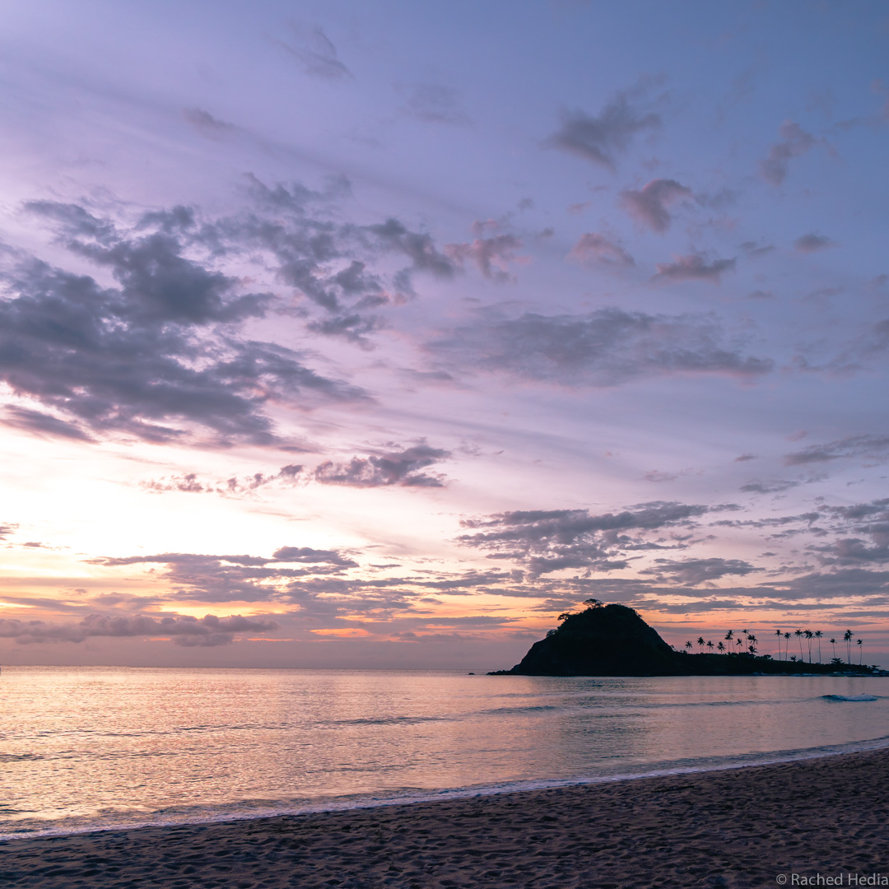
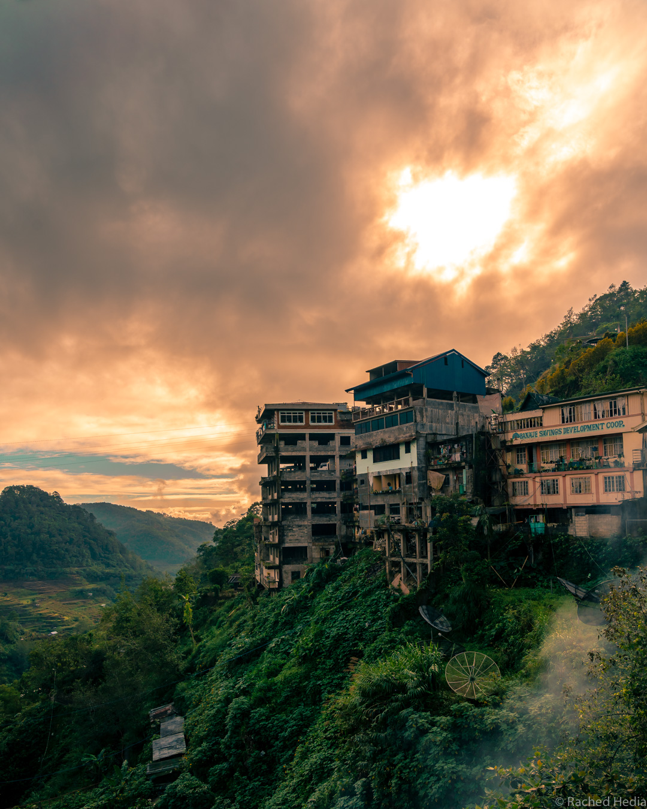

4 semaines aux Philippines : itinéraire et carnet d'adresses
Voici notre itinéraire de 4 semaines aux Philippines en décembre 2018. Tout y est détaillé : les îles où nous sommes allés, les transports, les hébergements et les activités.
Jour 1 : Manille sur l’île de Luçon
Quand on pose ses valises à Manille, on n’est pas encore tout à fait au paradis…mais plutôt sur le seuil de la porte.
La première chose qui nous frappe en arrivant à Manille, c’est la très grande inégalité des richesses qui est clairement visible. D’un côté, des quartiers avec de superbes villas, sous haute surveillance, complétement barricadés avec vigile à l’entrée. De gigantesques centres commerciaux à en avoir le vertige, véritables villes dans la ville. De l’autre, la plus grande misère, des bidonvilles, de jeunes enfants pieds nus dans les rues.
Manille a peu d’attrait et il y a tant à découvrir dans le reste du pays. Nous y avons passé juste la première nuit pour repartir dès le lendemain.
Hébergement à Manille
Frank Lloyd Apartelle : propriétaire accueillant, petite chambre simple mais tout est neuf. A seulement 5 km de l’aéroport mais de gros embouteillages (on a mis quasiment 1 heure en taxi).
Jours 2 à 8 : l’île de Coron
Depuis Manille, nous avons pris l’avion pour Coron, 40 minutes de vol seulement (118 €/pers). Il est possible de faire le trajet en bateau. La traversée se fait de nuit. C’est plus économique que l’avion et paraît-il plutôt confortable.
 Coron fut donc notre première destination aux Philippines.
Coron fut donc notre première destination aux Philippines.
L’animation se concentre dans le petit centre ville qui s’est construit en longueur de part et d’autre de la route principale. La ville est très touristique mais de petite taille donc elle reste agréable.
A savoir, il n’y a pas vraiment de plage sur l’île de Coron en dehors de Cabo Beach. C’est une petite plage sans prétention, un peu ombragée, parfaite pour une petite baignade ou une petite sieste. On y accède en 30 minutes en tricycle ou en scooter par une route en terre bien cabossée.
Pour aller à Cabo Beach en tricycle, nous avons payé 600 PHP (10 €) aller/retour. Le chauffeur vous emmène et vous attend sur place.
L’essentiel à voir pendant la journée se passe en mer.
Les excursions en bateau ou island hopping valent vraiment le coup.
Au programme : des paysages rocheux, des lagons aux eaux chaudes et turquoises, de petites plages de sable blanc, de jolis coraux, quelques poissons.
L’île est aussi réputée pour la plongée.
En fin de journée, ne manquez pas de monter au Mont Tapyas, une petite montée de 20 minutes seulement qui vous permet de dominer la ville et les îles alentours. C’est l’endroit parfait pour regarder le coucher du soleil.
Une autre option pour le coucher du soleil est d’aller sur le rooftop de l’hôtel 4:13. C’est le bâtiment le plus élevé de la ville et la vue depuis la terrasse est superbe.

Carnet d’adresses à Coron
-
Summer cafe & bar : on y sert de bons petits déjeuners.
-
Brujita : la nourriture est délicieuse et les plats variés. La salle est toute petite et très vite remplie. Si vous y allez pour dîner, essayez d’y être avant 19h.
-
La Sirenetta : restaurant sur pilotis. On y mange des crustacés notamment des pâtes aux crevettes bien assaisonnées dans un cadre paisible et romantique.
Hébergement à Coron
R2R Bayview : hôtel avec petite piscine bien placé, en centre ville. Chambre avec climatisation et petit déjeuner compris, 1500 PHP/nuit (25 €).
Jours 9 à 17 : l’île de Palawan
Depuis l’île de Coron nous avons rejoint l’île de Palawan en bateau jusqu’à El Nido. La traversée dure 3 heures en speed boat, 1680 PHP/pers (28 €). Asseyez vous de préférence à l’avant du bateau. On a un peu l’estomac retourné à l’arrivée !
Jours 9 à 11 : Nacpan Beach
El Nido étant devenu très touristique, nous avons choisi de nous rendre à Nacpan Beach, à une heure en tricycle de El Nido, 500 PHP (8,30 €).
En discutant avec d’autres voyageurs, on en a conclu que les exursions en bateau à El Nido étaient à peu près équivalentes à celles de Coron.
Donc cette fois pas d’excursion en bateau, on profite simplement de la grande plage de sable doré de Nacpan Beach qui s’étend sur 3 km.
Il y a beaucoup de chiens sauvages. Ils ne sont pas agressifs mais sont un peu collants dès qu’il y a de la nourriture. Ils nous font les yeux doux pour avoir à manger. Le soir on en voit quelques uns qui se creusent un trou dans le sable pour y dormir en boule.
Nous passons deux journées reposantes à se détendre sur la plage. C’est l’activité principale. 
Carnet d’adresses à Nacpan Beach
Nacpan Sunmai Sunset Restaurant : grand restaurant face à la plage. Très bonnes pizzas cuitent sur place dans un vrai four à pizza.
Hébergement à Nacpan Beach
Dandal Bay View : situé à l’extrémité sud de la plage, 1000 PHP/nuit (16,70 €). Terrasse face à l’océan pour le petit déjeuner et pour profiter d’un des plus beaux couchers de soleil.
Jours 12 à 17 : Port Barton
 Nous poursuivons notre route sur l’île de Palawan. Nous prenons un van depuis Nacpan Beach pour revenir à El Nido, 700 PHP (11,70 €). De El Nido, nous prenons un van pour nous rendre à Port Barton, 600 PHP/pers (10 €).
Nous poursuivons notre route sur l’île de Palawan. Nous prenons un van depuis Nacpan Beach pour revenir à El Nido, 700 PHP (11,70 €). De El Nido, nous prenons un van pour nous rendre à Port Barton, 600 PHP/pers (10 €).
Port Barton a toujours son âme de village. Les hôtels sont de petites tailles, plusieurs petits bunglows, souvent des affaires familiales. Les routes sont en terre, il n’y a aucune route goudronnée et tout se fait à pied ou en bateau. On croise très peu de tricyle. On peut voir les philippins dans leur quotidien, allant à l’église ou jouant au basket. L’ambiance est authentique et ça nous plaît.
Attention, il n’y a pas de distributeur de billets à Port Barton donc pensez à retirer de l’argent avant de venir.
Les excursions en bateau sont ici aussi très intéressantes. Les paysages sont différents de Coron. Les coraux sont très colorés. Il y a beaucoup de poissons et aussi des étoiles de mer. On a eu la chance de voir une tortue. Il y a aussi moins de touristes donc nous avons eu le bateau pour nous.
A une heure à pied (ou bien en bateau), nous sommes allés à White Beach, un banc de sable blanc bordé de cocotiers. Le paysage de carte postale. Plusieurs hamacs sont disposés le long de la plage et invitent à se détendre.
Carnet d’adresses à Port Barton
-
Gorgonzola : restaurant servant d’énormes pizzas et des pâtes faites maison. Un régal.
-
Mabuti : restaurant végétarien servant un irrésistible brownie au chocolat.
Hébergement à Port Barton
Hashtag Tourist Inn : petits bungalows bien équipés et très propres, 800 PHP/nuit (13,30 €).
Jours 18 à 26 : retour sur l’île de Luçon
Depuis Port Barton sur l’île de Palawan nous rejoigons Banaue sur l’île de Luçon : un périple de 2 jours.
De Port Barton nous prenons un van pour aller à l’aéroport de Puerto Princesa, 500 PHP/pers (8,30 €). De Puerto Princesa, nous prenons un vol jusqu’à Manille, 50 €/pers. De Manille, nous prenons un bus de nuit pour nous rendre à Banaue, 600 PHP/pers (10 €). Billets achetés en ligne avec la compagnie Ohayami.
Le voyage est long mais nous y étions préparé et tout se goupille bien.
Jours 18 à 21 : trek de deux jours Banaue / Batad
A notre arrivée à Banaue à 6h du matin, nous nous rendons directement à notre hôtel. Nous petit déjeunons à moitié endormis en attendant d’avoir notre chambre.

Banaue est le point de départ des treks pour aller voir les rizières en terrasse de Batad.
Nous organisons ou plutôt notre hôtel organise tout pour nous le jour même de notre arrivée. Nous rencontrons notre guide, Jojo, et convenons d’un horaire de départ pour le lendemain. Nous avons choisi un trek de 2 jours. Et on n’a pas regretté cette expérience une seconde.
Nous avons payé 4300 PHP (71,5 €) à deux pour deux jours. Ce prix comprend le guide, une nuit en chemin dans le village de Cambulo, les trajets en tricycle au départ et retour du trek et des frais d’admission (nourriture non incluse).
Nous avions un guide rien que pour nous. Jojo nous a tout expliqué de la culture du riz et de l’entretien des terrasses. Tout le travail est effectué à la main, sans l’aide d’aucune machine. Un travail de Titan.
Nous traversons des villages et découvrons les maisons traditionnelles aux toits de chaume et la façon dont les habitants vivent totalement isolés dans les montagnes.
Chose amusante, il y a beaucoup de touristes français aux Philippines, si bien que les guides parlent quelques mots de français et les enfants chantent les comptines françaises, et le répertoire est varié !
 Si vous voulez connaître le déroulement de ce trek en détail, l’itinéraire jour par jour est clairement décrit dans cet article takatoukiter.
Si vous voulez connaître le déroulement de ce trek en détail, l’itinéraire jour par jour est clairement décrit dans cet article takatoukiter.
Et si vous voulez en apprendre davantage sur l’histoire de la région et la culture du riz, vous retrouverez beaucoup d’informations dans cet article sisteroad.
Hébergement à Banaue
Banaue Evergreen Hostel and Restaurant : à deux pas de l’arrêt du bus de nuit, hôtel bien tenu par une propriétaire souriante et serviable, 800 PHP (13,30 €).
Jours 22 à 26 : Baler #lagalère
Après notre trek, nous voulions rejoindre un spot de surf. Ça tombe bien, il y en a deux très connus sur l’île de Luçon : San Juan La Union et Baler.
Les hébergements étant assez chers sur la période du nouvel an, nous avons éliminé le premier spot et choisi d’aller à Baler.
Depuis Banaue, nous avons dû faire tout un périple pour rejoindre Baler mais à moindre coût, seulement 700 PHP/pers (11,70 €). Nous avions pris conseil auprès des habitants pour avoir le meilleur itinéraire…
Il a quand même fallu prendre :
- un Jeepney de Banaue à Lagawe ;
- un second Jeepney de Lagawe jusqu’à Bagabag Junction - 1h30 au total ;
- un bus de Bagabag Junction jusqu’à San José - 4 heures ;
- un tricycle de San José jusqu’à Rizal - 30 minutes ;
- et enfin un bus de Rizal jusqu’à Baler - 3 heures (pour faire 100 km !).
Arrivés sur place, la désillusion fut totale. Baler ressemble a une station balnéaire abandonnée depuis longtemps.
Les quelques touristes présents sont essentiellement des locaux venus rendre visite à leurs familles pour les fêtes. Quelques complexes hôteliers, pour la plupart vieillots et sans charme, font face à la mer. Le remblai qui borde la plage est effondré par endroit. Et comme pour enfoncer le clou, le temps s’est invité à la fête. Il a plu des cordes pendant les 5 jours où nous étions à Baler (fin décembre). Un véritable déluge sans une minute de répit.
On peut conclure sans hésiter que ces 5 jours ont été les pires de ce tour du monde. Mais on ne peut pas gagner à tous les coups !
Même si la météo avait été plus clémente, l’atmosphère de Baler ne respire nullement l’esprit cool et positif du surf.
Hébergement à Baler
Bay’s Inn Resort : un des deux seuls complexes hôteliers qui fassent un peu rêver.
Jours 27 à 28 : Manille
Nous sommes heureux de quitter Baler. Nous prenons un bus de très bonne heure pour rejoindre Manille, 500 PHP/pers (8,30 €). Cette fois c’est direct, aucun changement !
Voilà nous arrivons au terme de notre itinéraire de 4 semaines aux Philippines. Nous garderons un très bon souvenir de ce pays. Baler ne restera qu’une petite ombre au tableau. Et si ce n’est pas déjà fait, vous pouvez lire notre article précédent sur les Philippines pour savoir ce qu’on en a pensé.
S'abonner à Le Monde Etcetera
Recevez les derniers posts directement dans votre boîte mail !